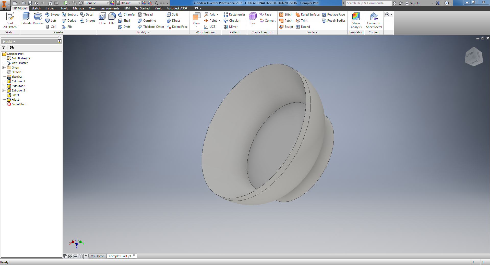
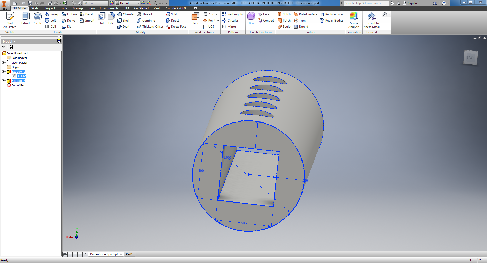
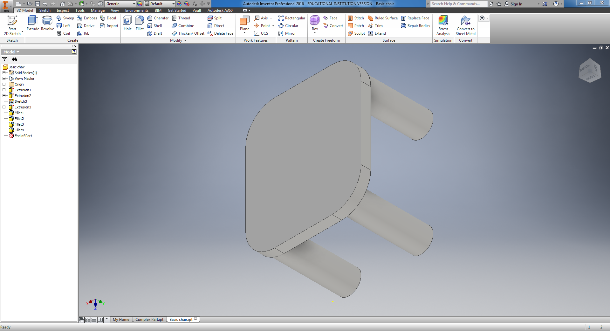

3-D design was fourth and the most complicated of all of them. The softwere I personally used was Inventor but found the softwere mildly complicated but got the hang of it to make: Complex parts
Measured parts,
and practical parts,

There was even time to 3-D print one of my designs specifically a phone stand,